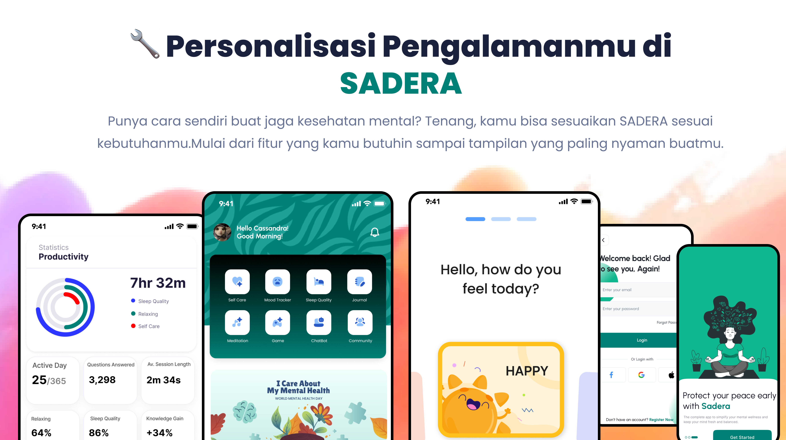

Visualisasi Data Penelitian
Pemaparan data hasil kuesioner dan pengujian UEQ pada prototipe Desain Interface
Mulyadi
UI/UX Researcher and Designer
Informatika - S1
Universitas Sultan Ageng Tirtayasa
Deskripsi Singkat Data
Data dikumpulkan dari remaja usia 12–24 tahun. Validasi menggunakan metode User Experience Questionnaire (UEQ) dan Cognitive Walkthrough.
Gander Total - Responden Remaja
Lihat Selengkapnya disiniDiagram Batang Tahun ke Tahun
Hasil Uji Testing - UEQ + Cognitive Walkthrough
| Nama | Status | Score CW | Persentase |
|---|---|---|---|
| Haikal Azka Raffasya | Mahasiswa | 6 | 86% |
| Anjeli Gusnawan | Mahasiswa | 6 | 86% |
| Tiara Sekar Ayuningtyas | Siswa | 7 | 100% |
| Shakira Nur Azizah | Siswa | 4.5 | 64% |
| Dhafin Rizky Aulia | Mahasiswa | 7 | 100% |
| Alfhiyana | Mahasiswa | 7 | 100% |
| Najwa Mutiara Salsabila | Siswa | 6 | 86% |
| Raka Ilhami Pradana | Siswa | 6 | 86% |
| Elga Syahira | Mahasiswa | 5.5 | 79% |
| Syifa Inas Luthfiya | Mahasiswa | 5.5 | 79% |
| Gita Nuras Lestari | Mahasiswa | 6.5 | 93% |
User Experience Questionnaire – Likert 5 (6 Aspek)
Persona Pengguna
Persona berikut disusun berdasarkan hasil wawancara langsung dengan dua responden dari kategori siswa dan mahasiswa yang memiliki pengalaman nyata dalam menghadapi tantangan kesehatan mental. Proses wawancara dilakukan secara langsung di RSUD Cilegon sebagai bagian dari kegiatan penelitian eksploratif untuk memahami kebutuhan emosional dan preferensi pengguna dalam memanfaatkan aplikasi digital sebagai dukungan terhadap kesehatan mental. Untuk menjaga privasi dan menjunjung tinggi etika penelitian, seluruh nama dan informasi identitas telah disamarkan menggunakan nama samaran, tanpa mengubah esensi dari pengalaman, tujuan, maupun tantangan yang disampaikan oleh responden. persona ini digunakan sebagai dasar dalam merancang solusi desain yang empatik, kontekstual, dan relevan dengan kehidupan pengguna sebenarnya.
User Expected
- Aplikasi mudah digunakan di perangkat mobile
- Tampilan simpel dan informatif
- Cepat dalam memberikan informasi kesehatan mental
- Privasi data pengguna terjaga
- Dilengkapi fitur edukasi dan konsultasi ringan
MockUp
Key Findings & Insight
Hasil menunjukkan pengalaman pengguna berada dalam rentang positif pada semua aspek UEQ dengan rata-rata di atas 4 dari skala 5.
Kesimpulan dan Next Steps
Aplikasi menunjukkan potensi tinggi dalam membantu remaja mengakses edukasi dan informasi kesehatan mental. Langkah selanjutnya adalah pengujian lebih lanjut dan penyempurnaan desain berdasarkan masukan pengguna.